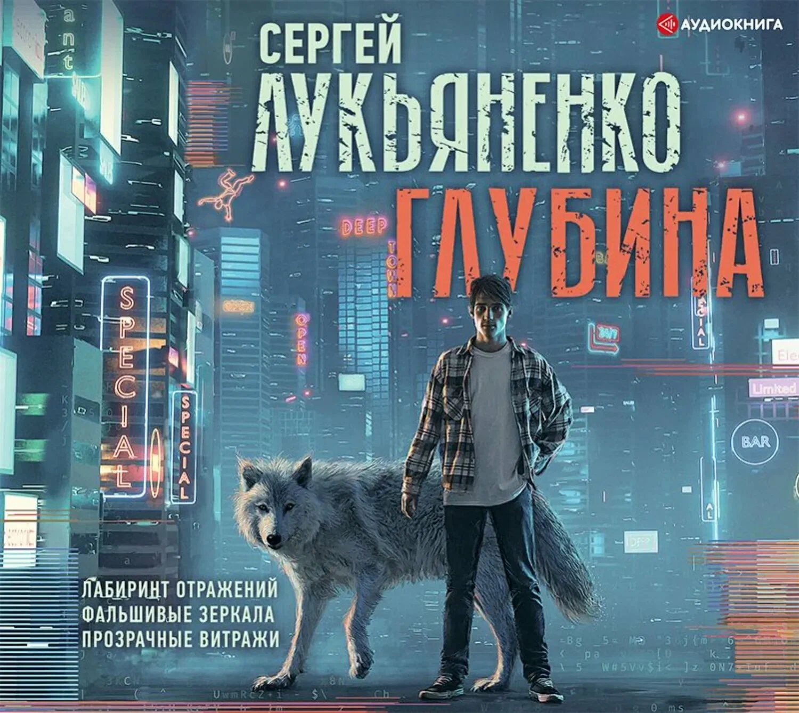
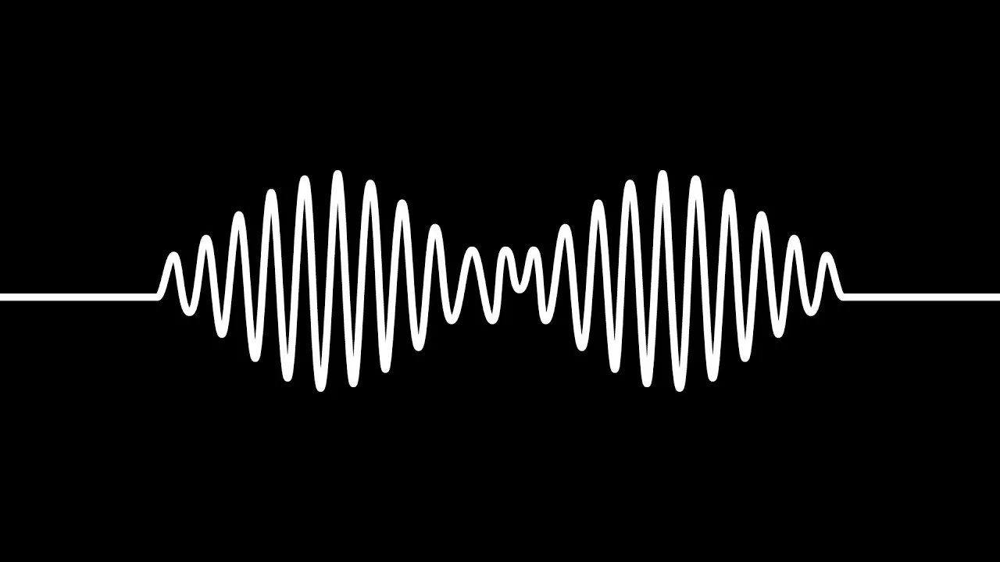
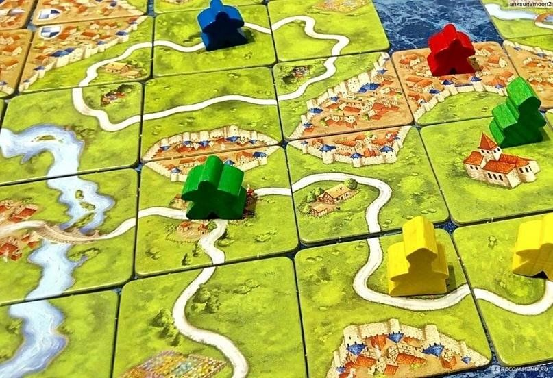

Некоторые мои Хобби:

Чтение
В свободное время люблю читать. Предпочитаю фантастику и фэнтези. Среди любимых авторов — Сергей Лукьяненко и Борис Конофальский. Особенно ценю такие книги, как «Искатели неба» и «Ночной дозор» Лукьяненко, а также «Путь инквизитора» и «Матабар» Конофальского. Отдельно выделяю «Игру Эндера» Орсона Скотта Карда — классику научной фантастики. Чтение помогает мне развивать воображение, расширять кругозор и находить вдохновение — в том числе для творческих и технических задач.

Музыка
В свободное время люблю слушать музыку. Я меломан — слушаю много разного, но особенно близок мне рок. Музыка помогает переключиться, зарядиться энергией и найти вдохновение — в том числе для учёбы и программирования.

Настольные игры
Ещё одно увлечение — настольные игры. Люблю как атмосферные дискуссионные игры вроде «Бункера», где нужно убеждать и отстаивать свою роль, так и стратегии вроде «Битвы за Рокуган» с продумыванием ходов наперёд. А «Каркассон» ценю за спокойный и уютный процесс — из маленьких тайлов каждый раз складывается уникальная карта средневековых земель.